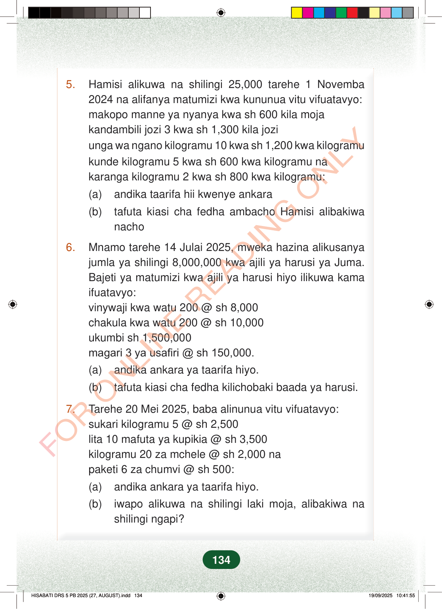

5.Hamisi alikuwa na shilingi 25,000 tarehe 1 Novemba2024 na alifanya matumizi kwa kununua vitu vifuatavyo:makopo manne ya nyanya kwa sh 600 kila mojakandambili jozi 3 kwa sh 1,300 kila joziunga wa ngano kilogramu 10 kwa sh 1,200 kwa kilogramukunde kilogramu 5 kwa sh 600 kwa kilogramu nakaranga kilogramu 2 kwa sh 800 kwa kilogramu:(a)andika taarifa hii kwenye ankara(b)tafuta kiasi cha fedha ambacho Hamisi alibakiwanacho6.Mnamo tarehe 14 Julai 2025, mweka hazina alikusanyajumla ya shilingi 8,000,000 kwa ajili ya harusi ya Juma.Bajeti ya matumizi kwa ajili ya harusi hiyo ilikuwa kamaifuatavyo:vinywaji kwa watu 200 @ sh 8,000chakula kwa watu 200 @ sh 10,000ukumbi sh 1,500,000magari 3 ya usafiri @ sh 150,000.(a)andika ankara ya taarifa hiyo.(b)tafuta kiasi cha fedha kilichobaki baada ya harusi.7.Tarehe 20 Mei 2025, baba alinunua vitu vifuatavyo:sukari kilogramu 5 @ sh 2,500lita 10 mafuta ya kupikia @ sh 3,500kilogramu 20 za mchele @ sh 2,000 napaketi 6 za chumvi @ sh 500:(a)andika ankara ya taarifa hiyo.(b)iwapo alikuwa na shilingi laki moja, alibakiwa nashilingi ngapi?134
5. Hamisi alikuwa na shilingi 25,000 tarehe 1 Novemba 2024 na alifanya matumizi kwa kununua vitu vifuatavyo: makopo manne ya nyanya kwa sh 600 kila moja kandambili jozi 3 kwa sh 1,300 kila jozi unga wa ngano kilogramu 10 kwa sh 1,200 kwa kilogramu kunde kilogramu 5 kwa sh 600 kwa kilogramu na karanga kilogramu 2 kwa sh 800 kwa kilogramu:
(a) andika taarifa hii kwenye ankara
(b) tafuta kiasi cha fedha ambacho Hamisi alibakiwa nacho
6. Mnamo tarehe 14 Julai 2025, mweka hazina alikusanya jumla ya shilingi 8,000,000 kwa ajili ya harusi ya Juma. Bajeti ya matumizi kwa ajili ya harusi hiyo ilikuwa kama ifuatavyo: vinywaji kwa watu 200 @ sh 8,000 chakula kwa watu 200 @ sh 10,000 ukumbi sh 1,500,000 magari 3 ya usafiri @ sh 150,000.
(a) andika ankara ya taarifa hiyo.
(b) tafuta kiasi cha fedha kilichobaki baada ya harusi.
7. Tarehe 20 Mei 2025, baba alinunua vitu vifuatavyo: sukari kilogramu 5 @ sh 2,500 lita 10 mafuta ya kupikia @ sh 3,500 kilogramu 20 za mchele @ sh 2,000 na paketi 6 za chumvi @ sh 500:
(a) andika ankara ya taarifa hiyo.
(b) iwapo alikuwa na shilingi laki moja, alibakiwa na shilingi ngapi?
134
5.Hamisi alikuwa na shilingi 25,000 tarehe 1 Novemba 2024 na alifanya matumizi kwa kununua vitu vifuatavyo:makopo manne ya nyanya kwa sh 600 kila mojakandambili jozi 3 kwa sh 1,300 kila joziunga wa ngano kilogramu 10 kwa sh 1,200 kwa kilogramukunde kilogramu 5 kwa sh 600 kwa kilogramu na karanga kilogramu 2 kwa sh 800 kwa kilogramu:(a) andika taarifa hii kwenye ankara(b) tafuta kiasi cha fedha ambacho Hamisi alibakiwa nacho6.Mnamo tarehe 14 Julai 2025, mweka hazina alikusanya jumla ya shilingi 8,000,000 kwa ajili ya harusi ya Juma.Bajeti ya matumizi kwa ajili ya harusi hiyo ilikuwa kama ifuatavyo:vinywaji kwa watu 200 @ sh 8,000chakula kwa watu 200 @ sh 10,000ukumbi sh 1,500,000magari 3 ya usafiri @ sh 150,000.(a) andika ankara ya taarifa hiyo.(b) tafuta kiasi cha fedha kilichobaki baada ya harusi.7.Tarehe 20 Mei 2025, baba alinunua vitu vifuatavyo:sukari kilogramu 5 @ sh 2,500lita 10 mafuta ya kupikia @ sh 3,500kilogramu 20 za mchele @ sh 2,000 napaketi 6 za chumvi @ sh 500:(a) andika ankara ya taarifa hiyo.(b) iwapo alikuwa na shilingi laki moja, alibakiwa na shilingi ngapi?